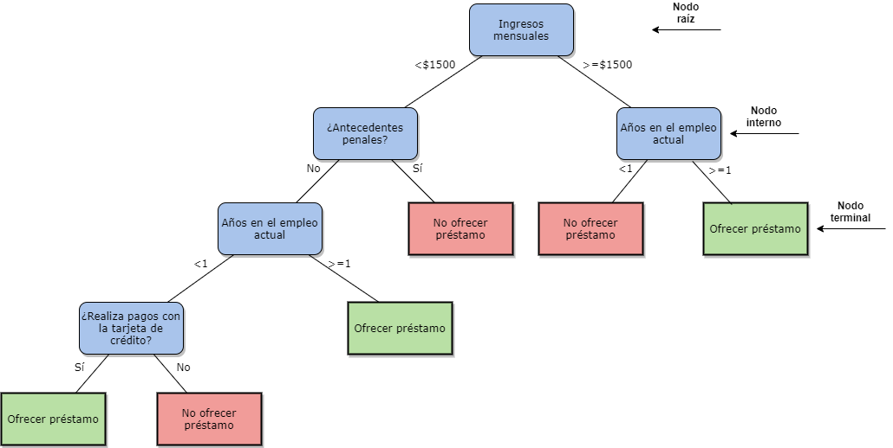

Los árboles de decisión son una de las técnicas de Machine learning más utilizadas. El objetivo es crear un modelo que prediga el valor o clase de una observación a partir de reglas de decisión obtenidas de datos anteriores. El uso es tan amplio que diferentes profesionales utilizan esta herramienta para generar estrategias de negocios, así como otros la utilizan para realizar diagnósticos médicos.
El modelo está formado por una serie de decisiones lógicas similares a las de un diagrama de flujo. El árbol comienza con un nodo llamado “nodo raíz”, en este y en los nodos internos se toman las decisiones basado en diferentes atributos, las ramas indican las decisiones tomadas. Al final del árbol de decisión se encuentran los nodos terminales, que representan el resultado de seguir una combinación de decisiones. Alternativamente, el nodo terminal puede tener asociada una probabilidad de que el valor meta tome cierto valor.
Esta técnica puede ser utilizada para predecir variables categóricas y continuas, y suelen ser llamados árboles de clasificación y regresión respectivamente. Con el fin de tener más claro el concepto, a continuación se presenta un ejemplo de un banco que utiliza un árbol de decisión para decidir si le debería ofrecer un préstamo a una persona.

La estrategia para construir un árbol de decisión es un método heurístico llamado partición recursiva. La idea es que conforme se avance en el árbol de decisión se formen grupos cada vez más uniformes,en donde predomine una clase o un valor. En el ejemplo anterior estos grupos son; personas a las que fue acertado ofrecerles un préstamo y las que no. De esta manera, se encuentran patrones que son utilizados para realizar predicciones con aplicantes nuevos.
Ahora que entendemos el concepto, y la aplicación de un árbol de decisión, podemos preguntarnos ¿Cuál es el procedimiento para construir un árbol de decisión? Existen una serie de algoritmos creados para realizar dicha tarea, por lo tanto no hay única manera. De modo general podemos hablar de dos categorías según el método de construcción, “top-down” (de arriba hacia abajo) y “bottom up” (de abajo hacia arriba). La mayoría de la literatura y aplicaciones son acerca de los “top-down” por lo tanto resulta más interesante conversar de estos.
Entre los algoritmos más utilizados de esta categoría se encuentran el ID3, C4.5, C5.0 y el CART. Como se mencionó, la idea es que al evaluar una característica se generen grupos más uniformes en los nodos. La cuestión es cómo decidir la evaluación de cuales características me generan los grupos más uniformes. La solución a esta pregunta se encuentra en los criterios de separación conocidos como “Splitting Criteria” en la literatura, y su elección es una de las principales diferencias entre los algoritmos.
Los criterios de decisión más usuales son el índice de Gini, criterio de impureza, y la métrica de ganancia de información (utiliza el concepto de entropía). La lista es amplia, sin embargo, diferentes estudios demuestran que el criterio que se utilice para separar los datos no implica mucha diferencia en el desempeño de los árboles de decisión. En algunas situaciones algunas funcionan bastante bien, y en otras veces no, por lo que no existe regla general.
En cuanto los algoritmos, su uso va a depender de los datos con los que se cuente, el valor a predecir y la preferencia del usuario en cuanto los criterios de separación. El ID3 utiliza la métrica de ganancia de información, y es usado para árboles de clasificación. Este algoritmo no es útil cuando se requiere lidiar con atributos numéricos o valores faltantes.
El C4.5 fue el sucesor del ID3, este algoritmo utiliza la métrica conocida como “gain ratio” (relación de ganancia) y puede tomar en cuenta características categóricas y continuas en las observaciones. La última versión de este algoritmo fue el C5.0 y es el más utilizado en la industria. Sus principales ventajas son que utiliza menos memoria, es más preciso y crea árboles más pequeños. Estos tres algoritmos fueron desarrollados por Ross Quinlan.
El algoritmo CART (Classification and Regression Trees) es el más utilizado para árboles de regresión. Construye árboles binarios donde en cada nodo sólo hay dos alternativas. Para construir el árbol de decisión este algoritmo se basa en el criterio de ganancia de información.
Cada rama termina el proceso cuando las variables ya no generan grupos más uniformes, es decir al separar por una variable en la iteración n no se genera un grupo más uniforme que el que se tiene en la iteración n-1. Desde luego que si lo anterior no termina el proceso, cuando se acaben las variables lo hará.
Otras alternativas son establecer que el árbol llegue a un límite previamente establecido por el usuario. Se suele establecer un máximo de profundidad o el número requerido de muestras en un nodo interno. La razón por la que se suele limitar el crecimiento del árbol es que la complejidad puede llegar a ser alta lo que puede llevar a un sobreajuste, esto quiere decir buenas predicciones para los datos con los que se entrenó el árbol, y malas predicciones para nuevas observaciones.
Una técnica que se suele complementar con el procedimiento anterior es Pruning. En lugar de detener el proceso, simplifica el árbol de decisión una vez que el algoritmo finaliza. El objetivo de esta técnica es reducir el tamaño del árbol eliminando los nodos que aportan poca información para realizar las predicciones. De esta manera, se mantiene un equilibrio entre qué tan simple se convierte el árbol de decisión y la precisión de las predicciones.
Los árboles de decisión hasta el momento descritos son sensibles a cambios ligeros en los datos. Bagging es una estrategia que se utiliza para reducir la varianza de las predicciones, y se basa en la idea de combinar múltiples árboles de decisión. En términos generales, el procedimiento separa los datos originales en grupos conocidos como sets de entrenamiento (Training sets), y construye árboles de decisión con cada grupo. El objetivo es utilizar la información de cada árbol de decisión creado para realizar la predicción.
Otro método que se basa en este concepto es Random forest. La principal diferencia es que cada vez que se va a separar los datos en los árboles de decisión, no se toma en cuenta todos los predictores (características de las observaciones). En cambio, se escoge una muestra aleatoria de n predictores como candidatos para separar los datos. Random forest es muy útil cuando se tienen bases de datos masivas y con muchas dimensiones.
Por otro lado, Boosting funciona de una manera similar, pero no separa los datos originales en grupos, sino que los árboles son ajustados a una versión modificada de los datos. Cada árbol de decisión es construido a partir de información de árboles anteriores, lo que crea un proceso secuencial. Esta técnica suele ser útil en análisis de riesgo, análisis de sentimientos y estimaciones de ventas. Una descripción más detallada, y aplicación con R de estos métodos se encuentra en este enlace.
Los árboles de decisión son muy útiles, su versatilidad y fácil entendimiento son dos de sus principales atractivos para los analistas de datos. Aunque tiene algunas limitaciones, debido a su sensibilidad a cambios en los datos y la complejidad que pueden desarrollar, como se explicó diferentes métodos son utilizados para reducir estos efectos.
Por otro lado, aunque diferente software facilitan la creación de los árboles decisión es importante saber que está sucediendo, al menos tener una idea. El mayor reto al desarrollar estos algoritmos no suele ser crear el modelo, sino su interpretación correcta. Sin el conocimiento adecuado puede desperdiciarse información valiosa que nos ofrecen estos algoritmos.
Como se pudo observar la temática alrededor de los árboles de decisión es sumamente amplia. Este artículo no pretende abordar estos temas a profundidad, ya que el autor considera que cada uno de ellos merece su tiempo y espacio para ser comprendidos. Por lo tanto, este será el primero de una serie de artículos que brinden el espacio para entender o aclarar conceptos con respecto a esta técnica, así como la aplicación en software como Python y R.
Lantz, B.(2013) Machine Learning with R
Rokach, L. Maimon,o.(2005) Decision Trees
Brownlee, J. (2016) Classification And Regression Trees for Machine Learning